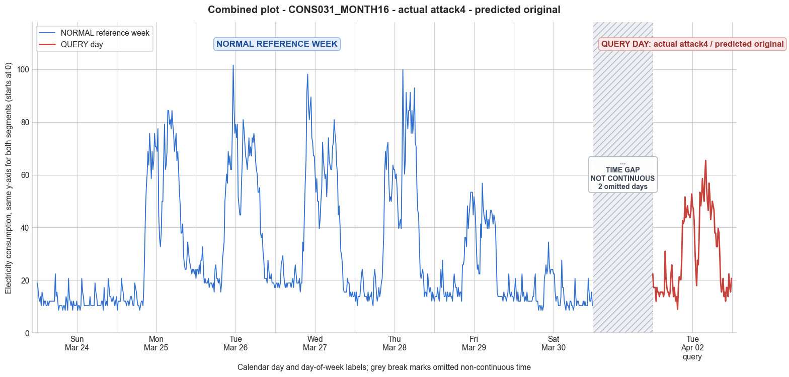

CONS031_MONTH16 · actual attack4 · predicted original
- Pair
- CONS031_MONTH16
- GT
- attack4
- Prediction
- original
- Binary GT
- attacked
- Binary Prediction
- original
- Source
- E010
- Parse
- stored
- Date
- 2013-04-02
- Weekday
- Tuesday
- Latency
- 1.96 min
- Tokens
- 9342

Final output
Classification: Original
Prompt
You are a domain expert in smart grid security and electricity theft analysis, with deep knowledge of non-technical loss (NTL) attack patterns in smart meters. You are given: 1. A plot of one week of original (normal) energy consumption for a smart meter, provided as context for the customer's typical consumption behavior. 2. A plot of one day of energy consumption for the same smart meter, which may or may not be manipulated. Below are common attack types, each defined by how consumption values are altered, their impact on magnitude and trend, and their possible technical causes. Attack 0: Generated by replacing all electricity consumption samples with zero values for the entire observation duration. Simulates a scenario where no energy usage is reported at all. May be caused by a total meter bypass or severe meter malfunction. Completely eliminates both the trend and magnitude of the consumption profile. Attack 1: Multiplies the actual energy consumption by a constant random value between (0,1). The lower the factor, the higher the severity. Can be triggered by meter bypass, magnetic interference, reverse current, and false data injection. The consumption trend remains the same but the magnitude is uniformly reduced. Attack 2: Generated by replacing consumption samples with zeros for a random duration. Also known as an on-off attack. Can be caused by full meter bypass, false data injection, and reverse current. Changes both the trend and amplitude. Attack 3: The actual consumption is multiplied by different random factors between 0 and 1, with a unique factor per sample. Similar to Attack 1 but the scaling factor varies per reading. Caused by meter bypass, magnetic interference, and reverse current. Changes both the trend and amplitude. Attack 4: Simulates energy theft over a randomly selected period within the observation window. All measurements in that period are reduced. Caused by meter bypass, magnetic interference, reverse current, and false data injection. Changes both the trend and amplitude. Attack 5: Each sample is replaced by a false value obtained by multiplying the average normal consumption by a random variable between 0 and 1, with a different variable per sample. Caused by false data injection. Produces a completely different pattern from the original consumption profile, changing both trend and magnitude. Attack 6: A random cut-off point is selected and all consumption values above it are replaced by that cut-off value. The attacker avoids exceeding a predefined maximum limit. Mainly caused by false data injection. Changes both the trend and amplitude. Attack 7: A random cut-off point is subtracted from each sample; if the result is negative, zero is reported. Similar to Attack 6 but replaces exceeding values with zero instead of the cut-off point. May be caused by false data injection or total meter bypass. Does not change the trend but reduces overall consumption. Attack 9: All samples are replaced by the average daily energy consumption, resulting in a flat constant profile. Easily detectable because constant consumption does not reflect normal customer behavior. Caused by false data injection. Eliminates all trends. Attack 10: Reverses the consumption pattern without reducing the total amount. Applicable when the electricity company uses time-varying pricing, allowing the attacker to shift high consumption to off-peak periods. Caused by false data injection. Changes the trend without decreasing total consumption. Attack 12: The attacker replaces their consumption pattern with that of a lower-consuming user. The legitimate user unknowingly pays the adversary's electricity bill. Caused by false data injection. Attack IEEE: For each 15-minute interval across the entire day, the consumer either reports the actual electricity consumption or substitutes it with zero. The result is a profile where some intervals reflect real consumption while others are zeroed out, creating an irregular pattern across the full day. May be caused by false data injection. Changes both the trend and amplitude. Given the two plots, determine: 1. Whether the day is attacked or original - compare the flagged day against the normal week and assess whether the consumption pattern is consistent with normal behavior or shows signs of manipulation. If the day is consistent with the customer's typical consumption behavior, classify it as original and provide no further analysis. If manipulation is detected, proceed to point 2. 2. Which attack type this most likely is - identify the single most probable attack and justify your choice based on how the flagged day deviates from the normal week. 3. The behavior of the identified attack - explain how the consumption values are manipulated, their impact on magnitude and trend, and the possible technical causes behind this type of attack. Output Format: Classification: - Original | Manipulated Identified Attack: (fill only if manipulated) - Most Likely: Attack X - Confidence: High | Medium | Low - Reasoning: Why it matches Attack X and why Attack Y and Attack Z were ruled out (list top 2 alternatives considered) Attack_Behavior_Explanation: (fill only if manipulated) - How consumption values are manipulated relative to the normal week - Impact on magnitude and trend - Possible technical causes
Reasoning content
We are asked to analyze a query day for a smart meter, comparing it against a reference week of normal consumption. We need to determine if the query day is original or attacked, and if attacked, identify the attack type and explain. We have numeric readings for 7 days (Day 0 to Day 6) of the reference week, and for the query day (DAY_ID=2). The reference week days are in March (cal_month=3) and the query day is in April (cal_month=4, dow=1, dom=9). The metadata says CONS_NO=31, MONTH_ID=16, WEEK_ID=1, DAY_ID=2 for the query day. The reference week has Day 2 data as well, but that is from the reference week (March). The query day is a different day (April 9, Tuesday). So we compare pattern. We need to determine if the query day pattern is consistent with normal behavior. Look at the per-day statistics: reference week days have means around 12 to 42, with Day 2 mean 42.26. Query day mean is 30.12, which is lower than Day 2 of reference but not drastically. However, the reference week shows variability: Day 0 mean 12.12, Day 1 39.35, Day 2 42.26, Day 3 40.18, Day 4 38.33, Day 5 26.21, Day 6 14.34. So there is a pattern: weekdays (Mon-Fri) have higher consumption, weekend (Day 6 is Saturday? dow=5 is Friday? Actually dow: 0=Mon, 1=Tue, 2=Wed, 3=Thu, 4=Fri, 5=Sat, 6=Sun. Reference: Day 0 dow=6 (Sun), Day 1 dow=0 (Mon), Day 2 dow=1 (Tue), Day 3 dow=2 (Wed), Day 4 dow=3 (Thu), Day 5 dow=4 (Fri), Day 6 dow=5 (Sat). So Sunday is low, Monday to Friday higher, Saturday medium. Query day is dow=1 (Tuesday), same as reference Day 2. So the query day is a Tuesday. The reference Tuesday (Day 2) had mean 42.26, max 101.55. Query day mean 30.12, max 65.40. So the query day is significantly lower in magnitude. But is it within normal variation? The reference Tuesday might be unusually high? The other weekdays: Mon mean 39.35, Wed 40.18, Thu 38.33, Fri 26.21. So the query day's mean 30.12 is lower than all weekdays except Friday (26.21) and perhaps close to Friday? But Friday mean is 26.21, so 30.12 is not far off. However, the max for Friday is 56.80, query max is 65.40. So the query day might be consistent with a lower Tuesday but still within the range of weekday variability. Let's examine the temporal patterns more closely. A normal household has morning and evening peaks. Look at the reference Tuesday (Day 2) readings: early morning (first 20 readings = 5 hours) around 15-27, then a gradual increase starting around index 32? Actually reading 32: 30.98, then 34.42, etc. Peak at index 45: 101.55 at around 11:45? Actually 96 intervals/day, each 15 mins. Index 0 is 00:00-00:15. So index 45 is about 11:15-11:30. That's a high peak. Then high values throughout evening. The reference Tuesday has high consumption during midday/afternoon. Now look at query day: readings: 22.38, 17.21, 17.21, 17.21, 12.05, 17.21, 15.49, 15.49, 13.77, 15.49, 15.49, 15.49, 15.49, 13.77, 15.49, 30.98, 20.65, 17.21, 15.49, 15.49, 13.77, 15.49, 22.38, 25.82, 18.93, 13.77, 17.21, 13.77, 12.05, 13.77, 8.97, 17.94, 21.31, 20.18, 20.18, 28.03, 42.61, 41.49, 42.61, 51.58, 43.73, 45.97, 48.22, 44.85, 44.85, 43.73, 45.97, 52.70, 48.22, 47.10, 42.61, 31.40, 23.55, 17.94, 27.54, 25.82, 36.14, 53.36, 48.19, 51.64, 58.52, 53.36, 49.91, 60.24, 65.40, 55.08, 49.91, 46.47, 56.80, 51.64, 43.03, 46.47, 49.91, 48.19, 46.47, 37.87, 37.87, 32.70, 32.70, 39.59, 37.87, 29.26, 18.93, 15.49, 17.21, 20.65, 13.77, 15.49, 12.05, 17.21, 17.21, 13.77, 22.38, 17.21, 15.49, 20.65 This pattern starts low, then around index 15: 30.98, then later around index 30: 8.97 then 17.94, etc. There is a dip at index 30: 8.97 (7:30? Index 30=7.5 hours, so 07:30). Then values rise to 42.61, 41.49, etc., peak at index 63: 65.40 (around 15:45). So query day has a morning low, a dip at 7:30, then increases to moderate peaks, max 65.40, which is lower than reference Tuesday's 101.55. But reference Tuesday also had a peak at 101.55. The pattern shapes look somewhat similar: both have low night/early morning, then increase mid-morning to afternoon, then decline. Do they match in timing? Reference Tuesday: index 0-20 generally below 25, with a slight rise at index 22-25? Actually at index 22: 15.49, index 23: 24.10, 25.82, 20.65... So the morning increase starts around 6am? Index 24 is 06:00. So a gradual increase from ~6am to a peak around 11am-12pm. Query day: at index 23: 25.82 (05:45), then later index 33: 28.03 (08:15), then peaks around 15:45 (65.40). So the query day has a later peak and a dip at 7:30. That might still be normal variation; households can have different usage on different days. The question is whether the query day appears manipulated. The statistics show mean lower than reference Tuesday but not impossibly low. The max is lower. The query day has a minimum of 8.97, which is similar to reference days' minima (often 8.61 or so). The std is 15.35, lower than reference Tuesday's 23.21 but similar to other days'. But the attack types described involve specific manipulations: zeroing, scaling, on-off, etc. Looking at the query day values, they are all positive, no zeros. So Attack 0 (all zeros), Attack 2 (on-off with zeros), Attack 7 (cutoff leading to zeros), Attack IEEE (some intervals zeroed) would produce zeros. So they are unlikely unless there are no zeros. The query day has a minimum 8.97 > 0, so no zero values. So attacks that introduce zeros are ruled out. Attack 1 multiplies by a constant random factor (0,1) - this would scale the entire day uniformly. If we compare query day to reference Tuesday, if Attack 1 applied, we would expect the shape to be the same but scaled down by a constant factor. Can we test that? Reference Tuesday values range from 8.61 to 101.55. Query values range from 8.97 to 65.40. The ratio max query / max reference = 65.40 / 101.55 ≈ 0.644. Mean ratio = 30.12 / 42.26 ≈ 0.713. Not exactly constant. Also check some individual points: reference Tuesday index 0: 20.65, query index 0: 22.38 (higher). So it's not a constant scaling. Attack 3 multiplies by different random factors per sample, which could produce varying ratios. Attack 4 reduces over a randomly selected period. Attack 5 replaces with values based on average normal consumption times random. Attack 6 replaces with cut-off. Attack 9 constant. Attack 10 reverses pattern. Attack 12 replaces with another user's pattern. The query day pattern does not look like a simple scaling of the reference Tuesday because some values are actually higher early on. For instance, index 0: query 22.38 vs ref 20.65; index 1: 17.21 vs 24.10 (lower). So it's not consistently lower. Perhaps the query day is just a normal day with different usage. Could it be Attack 10? Reversing pattern: reference Tuesday peaks midday (101.55 around 11:30), query day peaks later (65.40 at 15:45). If reversed, we'd expect the pattern to be mirror-imaged. Let's check: reference Tuesday early morning low, then high midday, then medium evening. Reversing would give high early, low midday, high evening? Not really. Query day has low early, a dip, then moderate high, then decline. Not reversed. Attack 12: replaced with another user's pattern. That could be any pattern, but we have no other user. We only see that this pattern might be normal. So we need to decide if it's original or manipulated. Given the instructions, we must "compare the flagged day against the normal week and assess whether the consumption pattern is consistent with normal behavior or shows signs of manipulation." So we need to see if the query day fits within the range of normal variation seen in the reference week. Reference week has days with widely varying means: Sunday 12.12, Monday 39.35, Tuesday 42.26, Wednesday 40.18, Thursday 38.33, Friday 26.21, Saturday 14.34. The query day is a Tuesday with mean 30.12. That is lower than the reference Tuesday but higher than Friday and Saturday. So it could be a lower-usage Tuesday. But is there a reason to suspect manipulation? The plot points are all plausible values, no sudden anomalies like zeros or extremely low values. The minimum is 8.97, which is comparable to normal nights. The maximum is 65.40, which is moderate. The overall shape looks like a typical household with morning and evening activities, perhaps with a dip mid-morning. There's no indication of a systematic attack like scaling or cutoff. One might argue that the significant drop from reference Tuesday (mean 42.26 to 30.12) could indicate Attack 1 or 3 scaling. But Attack 1 would multiply by a constant, so we'd expect the ratio of query to reference to be roughly constant. Let's compute ratios for some points: ref[0]=20.65 -> query[0]=22.38 (ratio 1.08); ref[10]=18.93 -> query[10]=15.49 (0.82); ref[20]=17.21 -> query[20]=13.77 (0.80); ref[30]=27.54 -> query[30]=8.97 (0.33). That's not constant. Attack 3 could have varying ratios. But the pattern is also not a simple scaling because the peak shift is present. For instance, ref peak at index 45:101.55, query at same time? Index 45 query: 43.73, which is lower but not necessarily scaled. If Attack 3 multiplies each sample independently, it would still preserve the timing of peaks and troughs. In query day, the peak is at index 63:65.40, while in ref, the highest is at 45. So the peak timing shifted. Attack 3 doesn't change timing, it just multiplies each reading individually, so if the original peak was at 45, the multiplied peak would also be at 45 (unless the multiplier for that point was very low, shifting the apparent peak elsewhere). The query peak is at 63, and the value at 45 is 43.73, which is not the peak. So if Attack 3, the original peak at 45 must have been scaled down so much that another point became higher. Possible but less likely. Attack 4 reduces over a period; that could shift peaks. Attack 6 cut-off: all values above a cutoff set to cutoff. In reference, many values above 65.40. If the cutoff were set to 65.40, then values above become 65.40. But query max is exactly 65.40, and there are several values close to that: 65.40 occurs once, also 60.24, 58.52, etc. In reference, there are many values above 65.40 (e.g., 68.85, 75.73, 77.45, 84.34, 101.55, etc.). If Attack 6 cut off at 65.40, those would become 65.40, creating a plateau at that value. But in query, we see only one 65.40, and not a sustained plateau. So Attack 6 is unlikely. Attack 7 subtracts a cutoff from each sample, with floor at zero. That would shift values down by a constant, reducing all by some amount, with zeros for smaller values. In query, we have no zeros, so if Attack 7, the cutoff must be less than the minimum (8.97), so all shifted down by <8.97, preserving shape. That could make the overall pattern similar but shifted down. Then the reference Tuesday minus a constant of about 8? Let's test: ref[0]=20.65 - 8 = 12.65, but query[0]=22.38 (higher). So no. Attack 9 constant average: query day is not constant. Attack 10 reversed: not reversed. Attack 12 other user: unlikely to detect without reference to other users. Given that the query day is a different date (April 9 vs the reference week in March), it's plausible that consumption changed due to seasonal changes (spring), different activities. The overall pattern doesn't exhibit clear signs of tampering like sudden zeros, unnaturally constant values, or dramatic drops inconsistent with normal variability. I'd lean towards original. But let's double-check if there's any attack type that could produce this pattern without zeros and with shifted peaks. Attack 12 could, but it's essentially replacing with another user's data, which would look different but still normal. Since we only have this one meter's data, we can't know if this pattern belongs to a lower-consuming user. But in the context of electricity theft, the attacker would want to reduce their bill, so Attack 12 would replace with a lower-consuming user's pattern. That would produce a lower mean and possibly different timing. So it's possible. But do we have enough evidence to call it manipulated? Probably not, because normal variation can also explain it. The task says: "If the day is consistent with the customer's typical consumption behavior, classify it as original and provide no further analysis." Given the reference week shows high variability across days (e.g., Tuesday 42 vs Friday 26), a Tuesday with 30 could be consistent with typical behavior. Moreover, the query day is in April, not the same week. Seasonal changes could affect consumption (e.g., less heating). So I'd say it's original. But wait, the problem description mentions Attack 12: "The attacker replaces their consumption pattern with that of a lower-consuming user." So they could mimic a lower-usage day. However, to detect that, we'd need to see a pattern that is not typical for this customer. Without knowing the customer's typical Tuesday pattern over several weeks, we only have one reference Tuesday. The reference Tuesday had high consumption (mean 42.26), but that might be an outlier; the other weekdays have means around 38-40, so 42 is not much higher. The Friday was lower (26) but Friday might be a different pattern. So a Tuesday with mean 30 is not extremely anomalous. I'd say it's likely original. Given the instruction to reason carefully, consider alternatives: If it were attacked, the most plausible attack could be Attack 3 (random scaling per sample) because it could reduce consumption variably. But the pattern still looks natural; there's no obvious sign of random perturbation. Attack 4 could target a period like midday, maybe reducing the peak. But the query day still has a peak later. No clear evidence of manipulation. Thus, I classify as Original.